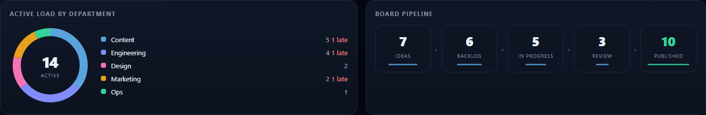

BrosephTech Bot
Talk in a voice channel and the bot writes your tasks. It records the call, transcribes it locally, summarizes it with AI, and turns the action items into board cards and Jira issues — then shows the whole operation on a live dashboard.

Record a meeting → tasks
The headline feature. /record start in a voice channel, talk, then /record stop.

- Join a voice channel and run
/record start. The bot captures each person on their own track, so long calls never cut off after a pause. - Talk normally.
/record statusshows who's been heard. - Run
/record stop(optionallytitle:Weekly sync). It transcribes locally on the GPU, then summarizes with Claude. - Pick the real tasks from the checklist and hit Create selected. Each becomes a board card + a Jira issue, with the full transcript attached as a file.
Slash commands
jiracheck verifies Jira./record).The dashboard
Open it at http://<host>:<port>/?k=YOUR_DASHBOARD_TOKEN (the token is saved to a cookie after the first visit). It auto-refreshes every 20 seconds. Add &demo=1 to preview with sample data.


KPIs, a department donut, the board pipeline, per-crew load bars, the work that needs attention, a live Jira panel, recent meetings + recordings, and channel-growth sparklines — all in one place.
Setup
Config lives in bt-bot/.env. Restart the bot to apply changes.
| What | Keys | Needed for |
|---|---|---|
| AI summaries + tasks | ANTHROPIC_API_KEY | good /record + /meeting output |
| Local transcription | WHISPER_CMD, WHISPER_MODEL | /record audio → text |
| Jira push | JIRA_BASE_URL/EMAIL/API_TOKEN/PROJECT_KEY | tasks → Jira |
| Web dashboard | DASHBOARD_TOKEN | the browser dashboard |
npm run deploy # register slash commands (once, and after adding commands) npm start # run the bot
docs/USAGE.md